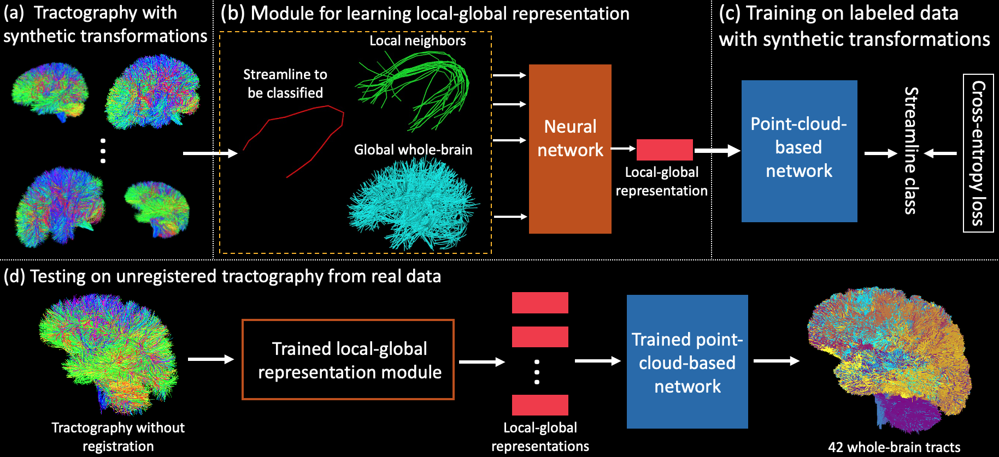

TractCloud: Registration-free Tractography Parcellation with a Novel Local-global Streamline Point Cloud Representation
- 1Harvard Medical School
- 2University of Sydney


Overview
Diffusion MRI tractography parcellation classifies streamlines into anatomical fiber tracts to enable quantification and visualization for clinical and scientific applications. Current tractography parcellation methods rely heavily on registration, but registration inaccuracies can affect parcellation and the computational cost of registration is high for large-scale datasets. Recently, deep-learning-based methods have been proposed for tractography parcellation using various types of representations for streamlines. However, these methods only focus on the information from a single streamline, ignoring geometric relationships between the streamlines in the brain. We propose TractCloud, a registration-free framework that performs whole-brain tractography parcellation directly in individual subject space. We propose a novel, learnable, local-global streamline representation that leverages information from neighboring and whole-brain streamlines to describe the local anatomy and global pose of the brain. We train our framework on a large-scale labeled tractography dataset, which we augment by applying synthetic transforms including rotation, scaling, and translations. We test our framework on five independently acquired datasets across populations and health conditions. TractCloud significantly outperforms several state-of-the-art methods on all testing datasets. TractCloud achieves efficient and consistent whole-brain white matter parcellation across the lifespan (from neonates to elderly subjects, including brain tumor patients) without the need for registration. The robustness and high inference speed of TractCloud make it suitable for large-scale tractography data analysis.
BibTeX
If you find our project useful in your research, please cite:
@misc{xue2023tractcloud,
title={TractCloud: Registration-free tractography parcellation with a novel local-global streamline point cloud representation},
author={Tengfei Xue and Yuqian Chen and Chaoyi Zhang and Alexandra J. Golby and Nikos Makris and Yogesh Rathi and Weidong Cai and Fan Zhang and Lauren J. O'Donnell},
year={2023},
eprint={2307.09000},
archivePrefix={arXiv},
primaryClass={cs.CV}}